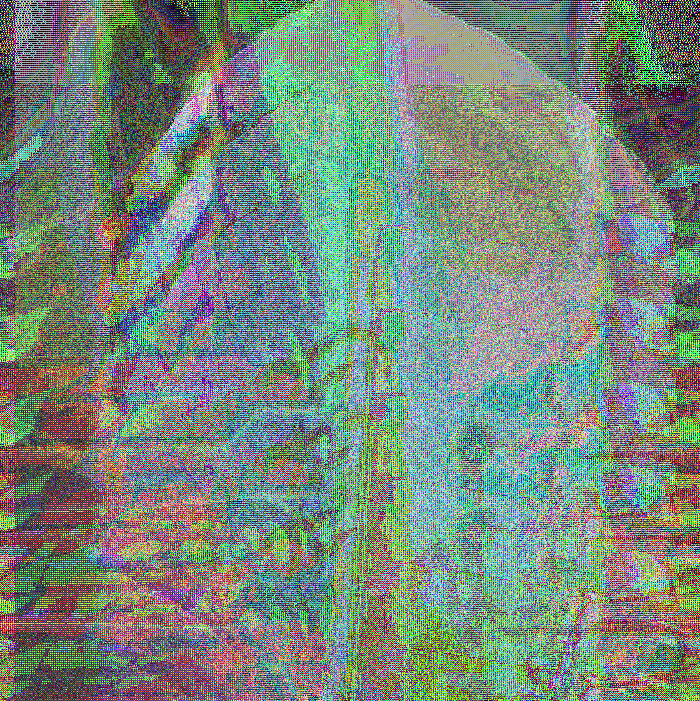
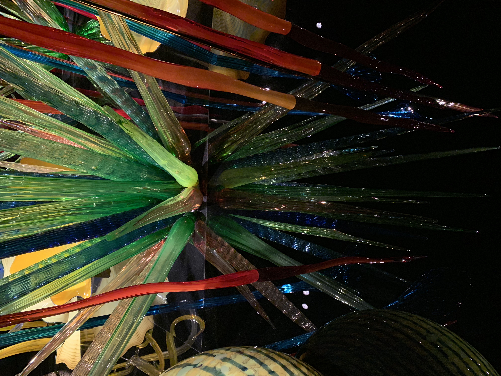
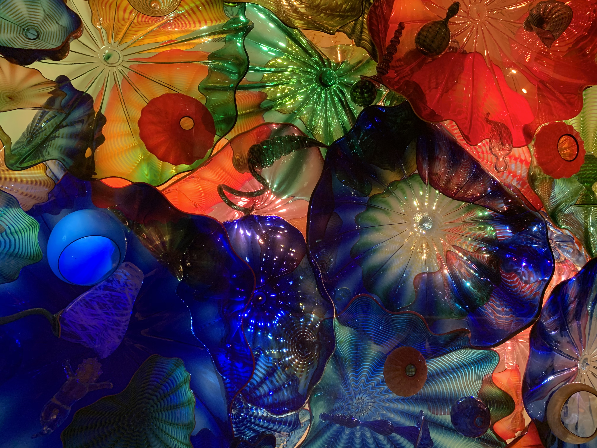
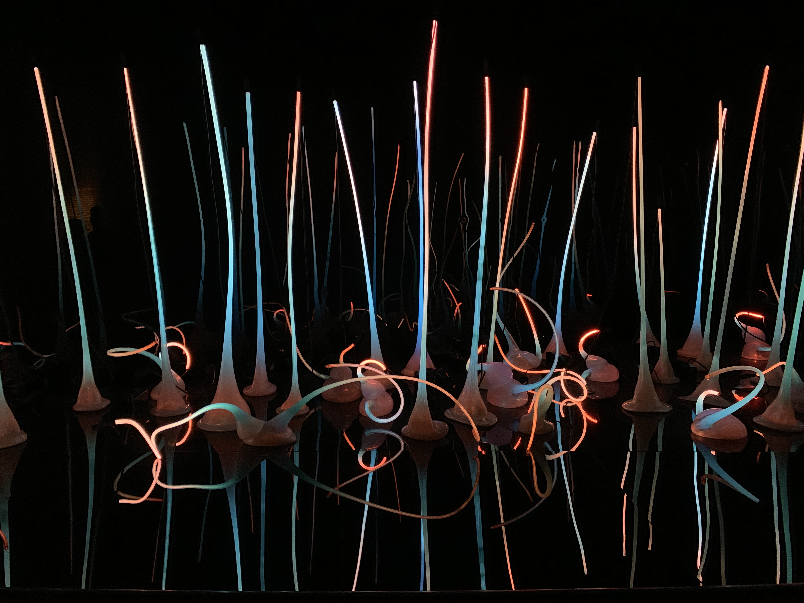
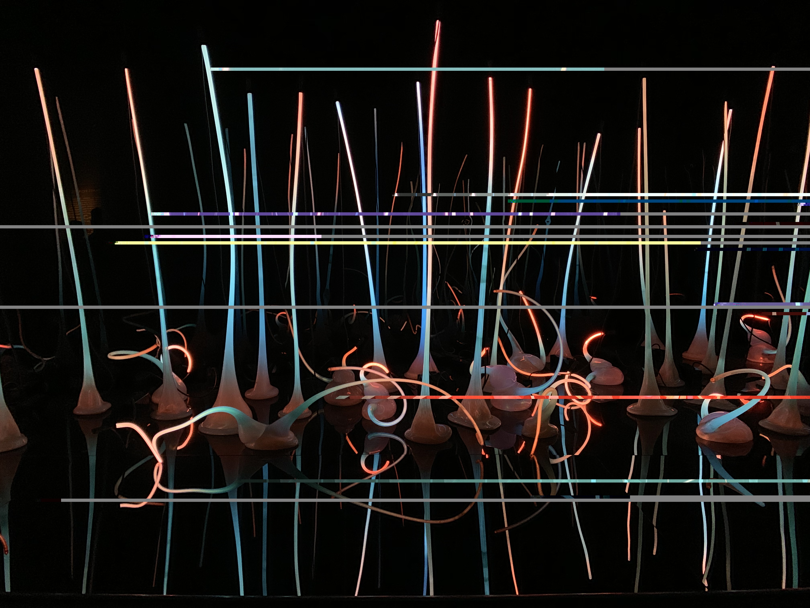

Using the inherent digital nature of files, can we manipulate them to make something that is aesthetically pleasing?
1. Manipulate image files 2. Use open source and other software to create glitches 3. Consider the role of the artist in making glitches, control versus chance
Bowl of Cherries manipulated by inputting image code into TextEdit. Code was deleted, duplicated, and all around messed up.
"Mr. Robot" manipulated by converting the image file to RAW data and inputting into Audacity. An echo filter was applied to the RAW data before being exported and converted into a png.
Series of Glass tells a story of the delicacy of Digital Media Art. Similarly to glass, digital art can be destroyed or glitched out by one single wrong move.
The first two images of this series were manipulated by converting the image file to the RAW data and inputting into Audacity. An echo filter was applied to RAW data before being exported and converted into a png.
The last image of this series was manipulated by inputting image code into TextEdit. Code was deleted, duplicated, and all around messed up.



 
Zoe Brazil
ART 74 Section 02 Fall 2020